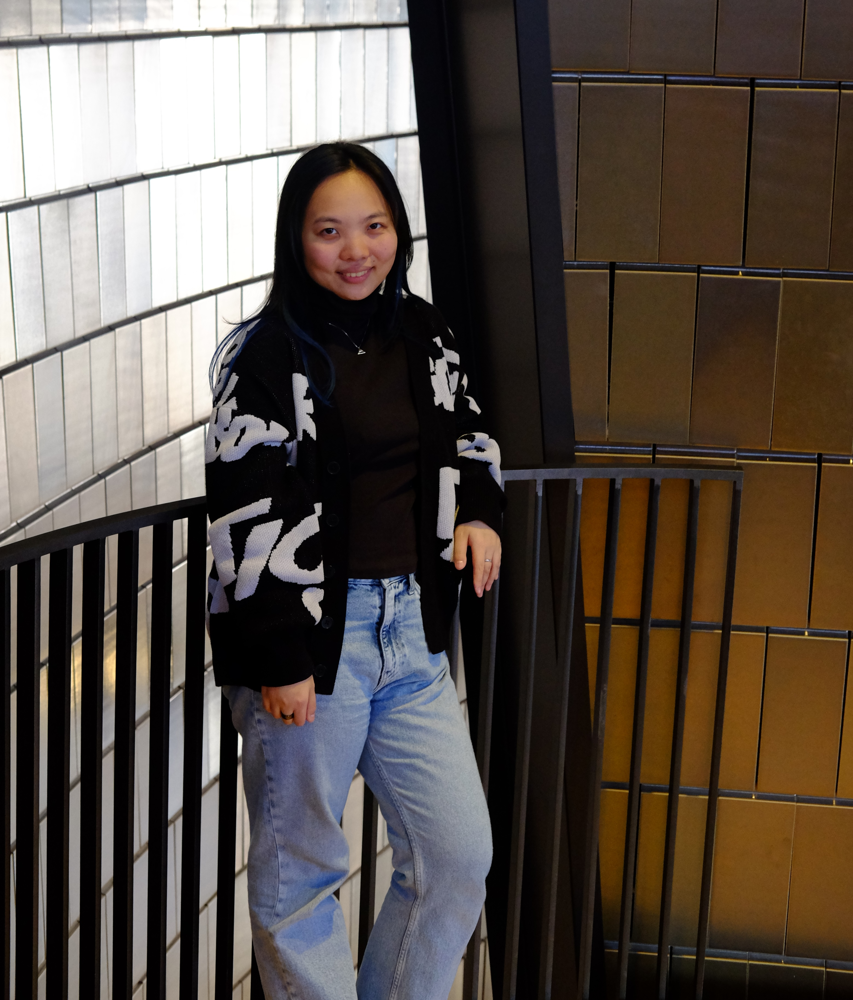

Rujun (Ruth) Zhang
Rujun (Ruth) Zhang
张儒君
2023-2025
University of Alberta, Canada
M.A. in sociology
2018-2022
Tsinghua University, China
B.A. in sociology
CONTACT
rujun@ualberta.ca
I am a sociology student at University of Alberta, Canada. I received my Bachelor’s degree in sociology from Tsinghua University, China in 2022; I am currently pursuing my Master’s degree in a 2-year thesis-based program.
I am mainly interested in the sociology of labor and work. My research interests include: work and employment; immigration and immigrant work; transnational labor; precarity; gig economy; gendered work; etc.
I am mainly interested in the sociology of labor and work. My research interests include: work and employment; immigration and immigrant work; transnational labor; precarity; gig economy; gendered work; etc.
2024—ongoing
MA thesis project
I'm currently working on my MA thesis project "Pursuit of Permanent Status and Career Choices for International Students in Canada". This study seeks to understand how the pursuit of permanent legal status affect international students’ career choices and trajectory. I will conduct interviews with international student graduates from recognized postsecondary institutions in Toronto, Ontario. I will draw on general theories concerning precarious work and intersectionality, and also use my empirical findings to expand existing theoretical concepts such as status coercion and liminal legality, which are mostly developed within the U.S. context. The study will contribute to understanding immigrants’ career outcome in Canada by providing new insights on early career engagement and underemployment.2023—ongoing
Research assistantship
I am currently working as research assistant for the project “Algorithmic and intersectional? Gender, race, and automation in hiring processes”. In this project I work with Dr. Nicole Denier and Dr. Karen Hughes from University of Alberta, as well as Dr. Yang Hu from Lancaster University. This project examines algorithmic labour markets through a novel intersectional and multi-method approach, focusing on Canada. It aims to study how supply-side (e.g., job seekers, employees) and demand-side (e.g., employers) actions contribute to intersectional inequalities.2020—2022
Undergraduate thesis project
In summer 2020 I initiated a Student Research Training project “Cost and reward for female beautification practice: Investigation of eating disorders among Chinese female college students”, which later turned into my undergraduate thesis project. I worked on this project for two years, during which I conducted semi-structured interviews with 32 informants, analyzed the qualitative data, and wrote several drafts based on two different theoretical frameworks. This project was conducted under the supervision of Dr. Tianhan Gui, from Tsinghua University’s School of Public Policy & Management.An abstract of this research project was accepted by SWS (Sociologists for Women in Society) 2021 Winter Meeting. I therefore participated and presented this project in one of the round table panels, as the only undergraduate student from a Chinese institution among the round tables.
2024 August
Presenter & roundtable presider @ 119th ASA (American Sociological Association) Annual Meeting
>> Section session “Inequality, Poverty, and Mobility Section Roundtable Session - Open Topic”>> Presented paper “Immigrant Selectivity for Chinese Immigrant Workers in Canada and the U.S.: A Comparative Study”
2024 June
Panelist @ WFRN (Work and Family Researchers Network) 2024 Conference
>> Session “Artificial Intelligence and Intersectional Inequalities in the Labor Market”>> Co-presented paper “Between the Supply and Demand Sides: How Employers and Job Seekers Navigate Intersectional Inequalities In AI-Automated Hiring”
 |
 |
Montréal, 2024 summer |
WFRN panel group |
2021 January
Roundtable presenter @ SWS (Sociologists for Women in Society) 2021 Virtual Winter Meeting
>> Presented abstract “Mirror, Mirror on the Wall: Investigation of Binging and Purging Syndromes among Chinese Female College Students”2024 September-December
Teaching Assistant, SOC 210 "Introduction to Social Statistics"
2024 January
Guest Lecturer, SOC 260 "Inequality and Social Stratification"
>> Delivered guest lecture "Domestic Work in Contemporary Taiwan & Ecuador".
Between year 2022 and 2023 I worked and lived in London, UK for 10 months. I am quite fond and nostalgic of the whole experience. Also there was this one lager I tasted in Torquay (a small seaside town in Southern England) that greatly improved my overall impression for beer.
I love musicals and music and theatre in general. In retrospect it seems that I have developed a habit of planning short trips with almost the sole purpose of seeing musicals and plays. I spent two days in Stratford-upon-Avon in England and saw Richard III the play in Shakespeare’s hometown; I went to Vienna twice, for three days and one day respectively, and saw the Rebecca musical as well as the Elisabeth musical concert; in November 2023 I visited New York and Minneapolis in the US to see two Sondheim musicals, Merrily We Roll Along and Company. I also love choral music and I've been singing in choirs for six consecutive years now. It's a simple, pure and beautiful source of consolation and joy.
I enjoy literary reading and writing immensely. During my undergrad study I took a minor degree in English language & literature, just so that I could spend more time reading literary works in a fully justified manner.
I enjoy gaming but only to a very limited extent. If you invite me to play overcooked or minecraft together I would always say yes.
I'm slowly learning Polish and I have a small wooden beaver on my nightstand.
I somehow like front-end web development but find it really hard to keep as a hobby. I built this website by myself.
I love musicals and music and theatre in general. In retrospect it seems that I have developed a habit of planning short trips with almost the sole purpose of seeing musicals and plays. I spent two days in Stratford-upon-Avon in England and saw Richard III the play in Shakespeare’s hometown; I went to Vienna twice, for three days and one day respectively, and saw the Rebecca musical as well as the Elisabeth musical concert; in November 2023 I visited New York and Minneapolis in the US to see two Sondheim musicals, Merrily We Roll Along and Company. I also love choral music and I've been singing in choirs for six consecutive years now. It's a simple, pure and beautiful source of consolation and joy.
I enjoy literary reading and writing immensely. During my undergrad study I took a minor degree in English language & literature, just so that I could spend more time reading literary works in a fully justified manner.
I enjoy gaming but only to a very limited extent. If you invite me to play overcooked or minecraft together I would always say yes.
I'm slowly learning Polish and I have a small wooden beaver on my nightstand.
I somehow like front-end web development but find it really hard to keep as a hobby. I built this website by myself.